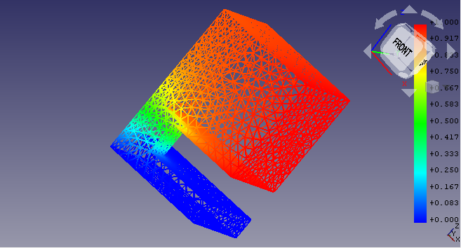

Yeah yeah, I skipped week 4. I know. That’s because nothing much happened in that week. Bernd was busy with some heavy FEM development. And so I didn’t had much to do. I did made some improvements in the Example GUI. Used a dictionary to map the example module names with their names in the get_information() method. Thus the GUI will now show the example names rather than the example module names. This is just for a better readibility and understandability of the user. Ah well, week 4 was the last week of the Community Bonding Period and so coding isn’t really expected in that period. Hence we are good with a little less coding.
But this week marked the start of June and the First Coding Period and it sure was one busy week.
At the very first day, HoWil (my second mentor for this GSoC, third bieng kkremitzki) gave me the first Elmer example to make. Elmer is one of the three FEM solvers that are integrated within FreeCAD. So for running an Elmer example, I would obviously need Elmer to installed on my system. Now on Arch Linux, Elmer is available as an AUR package as elmerfem and as elmerfem-git. elmerfem uses the latest release from Elmer’s GitHub repo to build the package whereas elmerfem-git (as the name suggests) uses the default branch from the repo to build the package. Thus, elmerfem-git will always have a more recent code than elmerfem, though that also makes it more unstable. So anyway, I tried to install elmerfem but faced an issue with I reported to the maintainer. No even before I encountered that issue, I faced issues with the dependencies of this package. For examples this issue with mmg where I had to apply a patch on the fly as guided by the maintainer. Then I couldn’t install paraview because it conflicts with vtk which is required by opencascade which is a dependency of FreeCAD itself. So I tried paraview-git but I an error in that too. So finally I had to install paraview-opt building which is a really cumbersome job because paraview a really big software. * sigh * And what do I get after all that? The issue in elmerfem. * sigh Anyway, I went for elmerfem-git and installed all of it dependencies too. But then there was a package trilinos in dependencies which refused to get installed. sigh *
So after all that trouble, I reached out to the developers of Elmer with the issue with elmerfem and with their help and suggestion I built it up from the very source. It took me around 3 days to finally get Elmer in my system. But the experience was rewarding!!! Not only did I learned more about the packaging of AUR packages and how I tinker with them, I got to creat one of my first issue of a big project and interact with the developers.
The example given to me initially was solving an electrostatic equation. In fact a standard example from the Elmer tutorials (page 29 of this pdf). Out of the three solvers we have, Elmer is the only one capable of solving electrostatic equations. Till now, we were only doing mechanical examples, whose results can be visualised quite easily. But now eith electrostatics, it will be fun to visualise the results. This is also because Elmer results have quite a few visualisation options in FreeCAD. For example, this is one way to visualise the result of the example we are talking about here:

These results are not correct, but they are visually appealing.
And since Elmer only supports Gmsh mesh object, on Bernd’s suggestion, I changed all the examples’ mesh to a Gmsh object. With Elmer coming in focus, there were other changes too, like adding the proper equations in those examples which support Elmer. But this was done slowly as we had to verify the results too.
Also in this week I was introduced to the manager module, which has the code to programmatically solve an example. So Bernd asked that I register (make methods for) the new examples in the manager module and if we could integrate it with the Example GUI, thus we will have a ‘Run’ button to have an example solved. When I first tried to use it, I got an error which we resolved here.
And while we solved an issue, looks like a mystery was solved here: